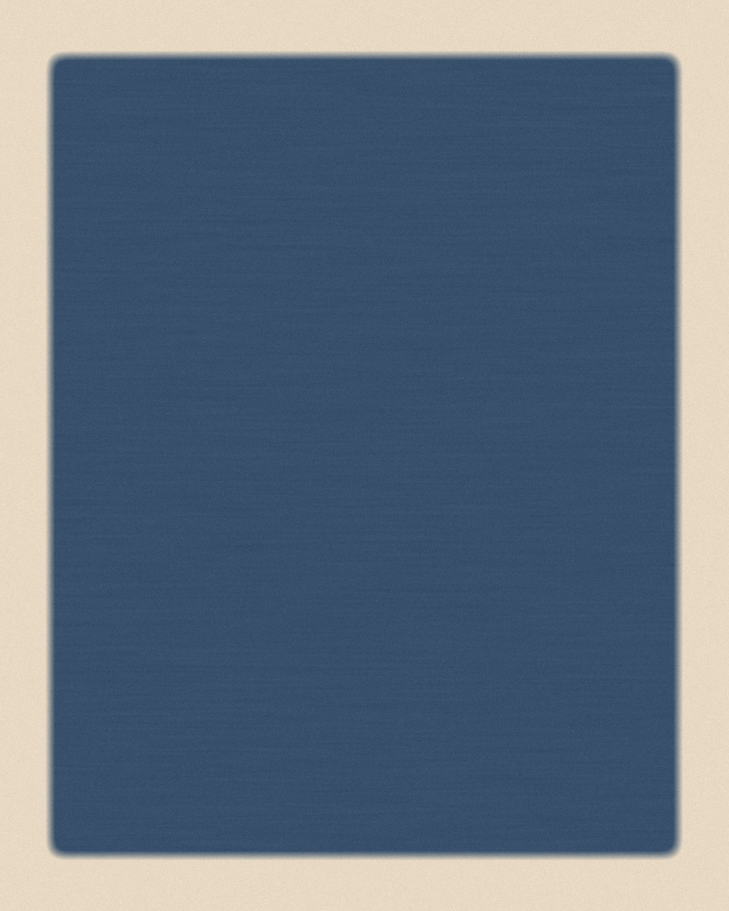
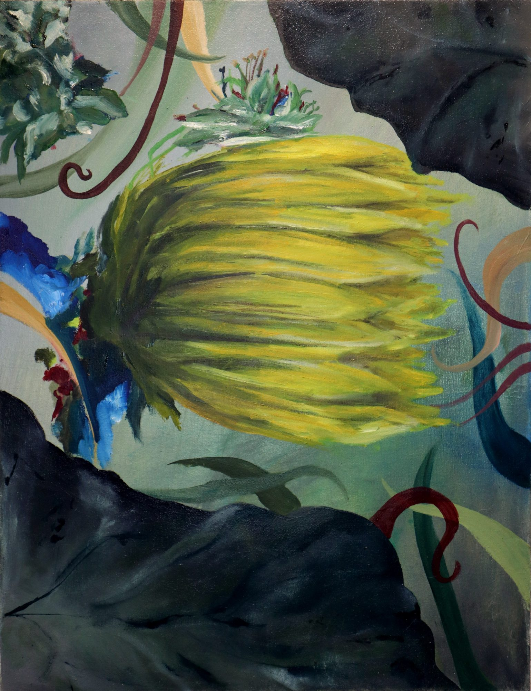
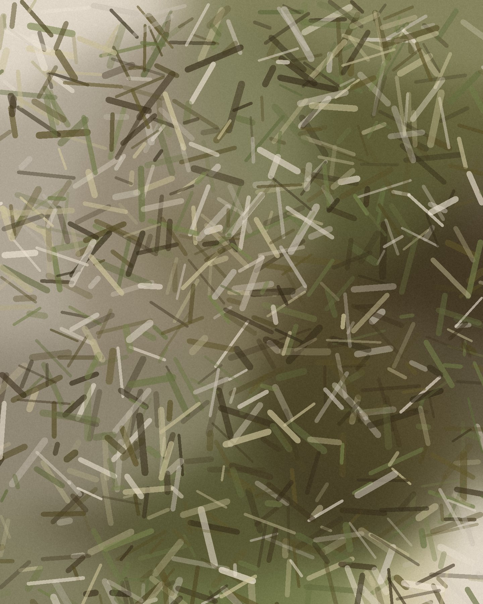
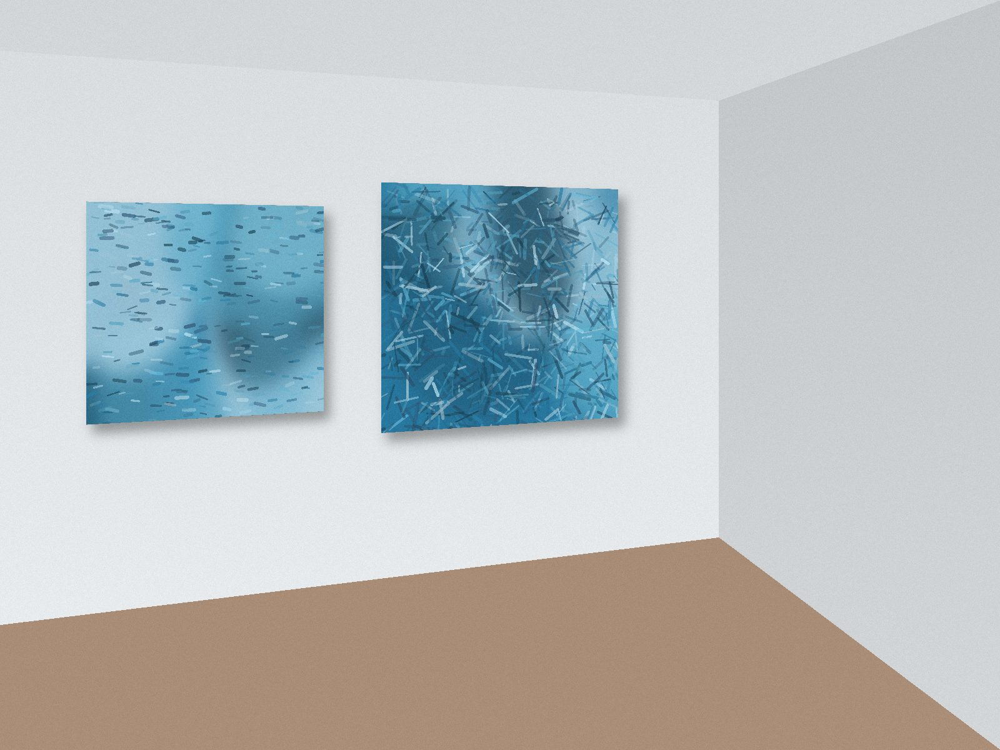
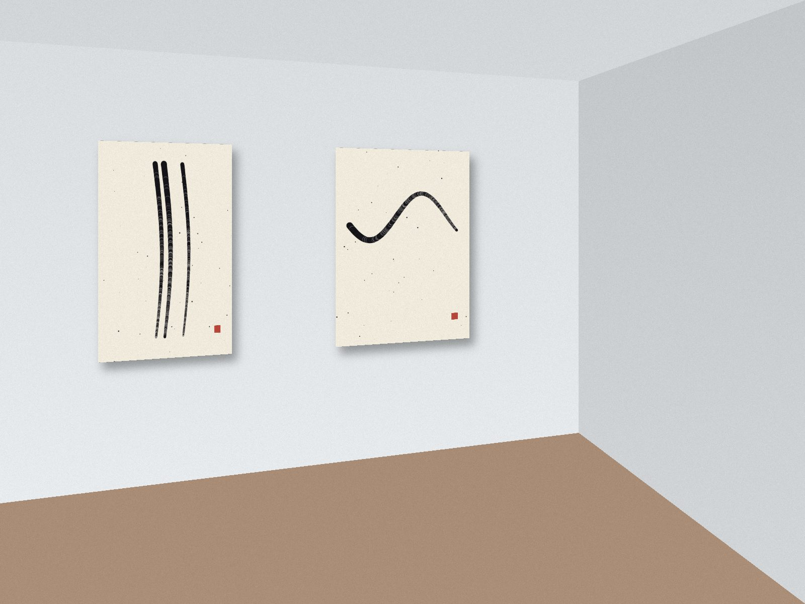
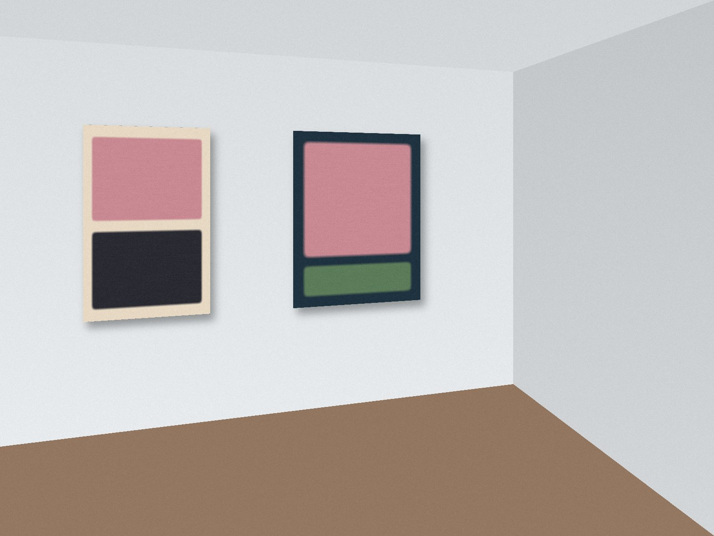

New from the artists you follow, hung at their real sizes.



Elad Amsalem, Together, 2026Oil on canvas, 90 × 70 cm. New this week. The wall takes its colour from it: it's the last work you looked at.

Low TideLia Morén Opening tonight · 20:00
Ink, BreathMaya Haddad Closes Wednesday
Slow ColourDaniel Ostrovsky Opens Tuesday · 19:00